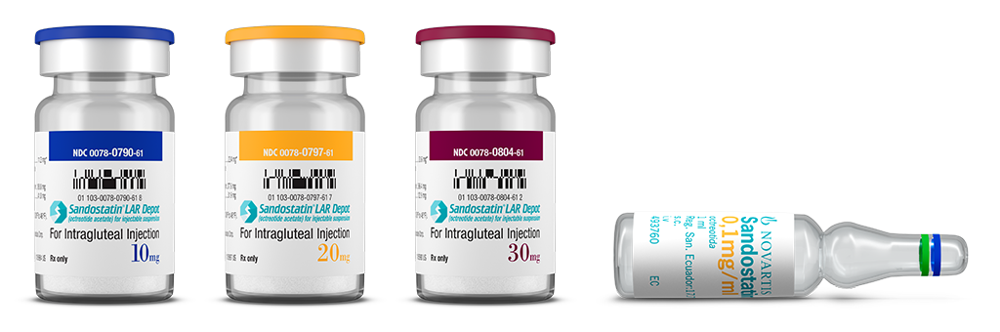
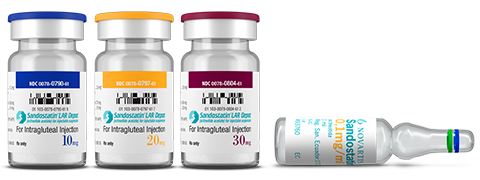
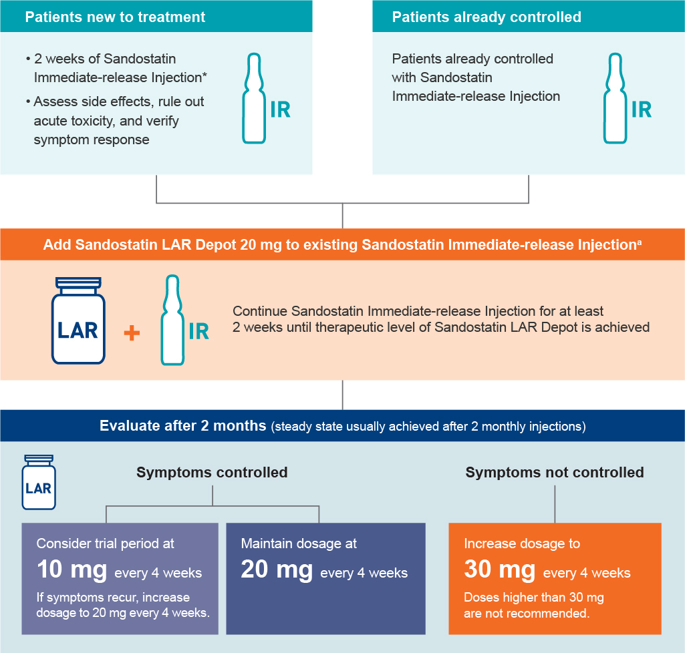
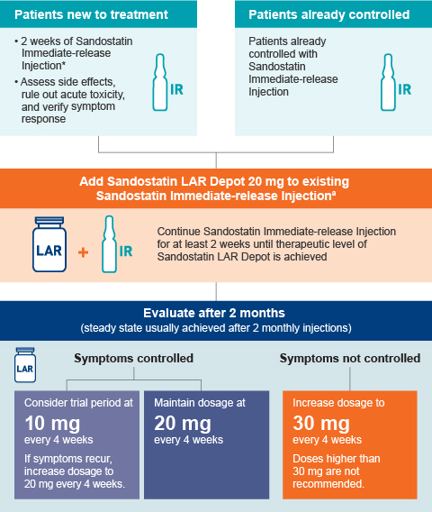

Warnings and Precautions Gallbladder abnormalities may occur. There have been postmarketing reports of cholelithiasis (gallstones) resulting in complications, including cholecystitis, cholangitis, ...
We’re moving on!
Join us at www.hcp.novartis.com—our new location for health care professionals to find product, access, and medical information. Now you can find the tools you need to help manage your patients, all in one place!
You’ll have access to the site in a moment, or click continue to close this message and advance directly to the site.
For:
Severe Diarrhea and Flushing Associated With Carcinoid Syndrome
Dosing & Administration
Multiple Dosing Options Can Help Effectively Manage Patients' Symptoms1
Flexible dosing with 10 mg, 20 mg, and 30 mg options allow for up or down titration with Sandostatin® LAR Depot (octreotide acetate) for injectable suspension in 10-mg increments from the recommended starting dose of 20 mg. Sandostatin LAR Depot should be administered by a trained health care provider.
- If symptoms are adequately controlled on 20 mg, you may consider a dose reduction to 10 mg
- If symptoms are not adequately controlled on 20 mg, you are able to increase the dose to 30 mg
- Doses higher than 30 mg are not recommended
Dosing with Sandostatin LAR Depot
Utilizing the Full Line of Sandostatin1
Sandostatin® (octreotide acetate) Immediate-Release Injection and Sandostatin LAR Depot can be used to initiate treatment, titrate treatment, and treat flare-ups. After an initial 2-week starting dose, patients who respond to and tolerate Sandostatin Immediate-Release Injection may switch to Sandostatin LAR Depot, which offers dosing once every 4 weeks.
- Short-acting Sandostatin Immediate-Release Injection should be continued for at least 2 weeks following initial injection of Sandostatin LAR Depot 20 mg
- After 2 months, adjust dose of Sandostatin LAR Depot based on symptom control
- Despite good overall control of symptoms, patients may experience periodic exacerbation of symptoms. During these periods, they may be given Sandostatin Immediate-Release Injection for a few days at the dosage they were receiving prior to switching to Sandostatin LAR Depot, until symptoms are again controlled


Dosing Flowchart1


aFor patients with carcinoid tumors, starting dosages of Sandostatin Immediate-Release Injection range from 100 mcg/d to 600 mcg/d in 2 to 4 divided doses. For patients with VIPomas, starting dosages range from 200 mcg/d to 300 mcg/d in 2 to 4 divided doses.1
Short-Lived Pain on Injection1
Pain on injection, which is generally mild to moderate and short-lived (usually about 1 hour), is dose related. Injection sites should be rotated between the right and left gluteus to avoid irritation.
- In patients with carcinoid syndrome who kept a diary, pain at the injection site was reported by about 20% to 25% at the 10-mg dose and by about 30% to 50% at the 20- and 30-mg doses
For Patients Not Currently Receiving Octreotide Acetate1
Begin therapy with Sandostatin Immediate-Release Injection and continue for at least 2 weeks.
|
For carcinoid tumors |
Suggested daily dosage ranges from 100 mcg/d to 600 mcg/d in 2 to 4 divided doses (mean daily dosage is 300 mcg/d) during the first 2 weeks of therapy. Some patients may require doses of up to 1500 mcg/d. |
|
For VIPomas |
Suggested daily dose is 200 mcg to 300 mcg in 2 to 4 divided doses (range, 150-750 mcg). Dosages over 450 mcg/d are usually not required. Doses may be adjusted on an individual basis. |
Patients Currently Receiving Sandostatin Immediate-Release Injection1
Patients who tolerate and are already controlled with Sandostatin Immediate-Release Injection should add Sandostatin LAR Depot according to the dosing regimen described below.
|
Add Sandostatin LAR Depot |
|
|
After 2 months, consider dose adjustment |
|
Dosing for Special Populations1
|
Renal failure |
In patients with renal failure requiring dialysis, the starting dosage should be 10 mg every 4 weeks. In other patients with renal impairment, the starting dosage should be similar to that of a patient without renal failure (ie, 20 mg every 4 weeks). |
|
Hepatic impairment—patients with cirrhosis |
In patients with established cirrhosis of the liver, the starting dosage should be 10 mg every 4 weeks. |
Assess Therapeutic Efficacy and Safety of Treatment1
To assess therapeutic efficacy and safety of treatment, continued patient monitoring is necessary. Be sure to monitor for adverse events that may occur with Sandostatin LAR Depot. See the full Prescribing Information for more information.
- Cholelithiasis and gallbladder sludge
- Blood glucose levels
- Vitamin B12 levels
- Serum zinc concentrations in patients receiving total parenteral nutrition (TPN)
- Thyroid Function (TSH, total and/or free T4)
- 5-HIAA, plasma serotonin, and plasma substance P
- VIP (plasma vasoactive intestinal peptide)
Mixing & Administration
It is important to closely follow the mixing instructions included in the packaging. Sandostatin LAR Depot must be administered immediately after mixing.1
Downloadable resources for mixing and administration:
If you still have questions about mixing and/or administration of Sandostatin LAR Depot, please call 1-888-NOW-NOVA (1-888-669-6682).
5-HIAA, 5-hydroxyindoleacetic acid; IR, immediate release; LAR, long-acting release; VIPomas, vasoactive intestinal peptide tumors.
Reference: 1. Sandostatin LAR Depot [prescribing information]. East Hanover, NJ: Novartis Pharmaceuticals Corp; 2019.
IMPORTANT SAFETY INFORMATION
Warnings and Precautions
- Gallbladder abnormalities may occur. There have been postmarketing reports of cholelithiasis (gallstones) resulting in complications, including cholecystitis, cholangitis, pancreatitis, and requiring cholecystectomy in patients taking Sandostatin LAR Depot. Patients should be monitored periodically. If complications of cholelithiasis are suspected, discontinue Sandostatin LAR Depot and treat appropriately
- Glucose Metabolism: Hypoglycemia or hyperglycemia may occur. Blood glucose levels should be monitored when Sandostatin LAR Depot treatment is initiated or when the dose is altered. Antidiabetic treatment should be adjusted accordingly
- Thyroid Function: Hypothyroidism may occur. Baseline and periodic assessment of thyroid function (TSH, total and/or free T4) is recommended
- Cardiac Function: Bradycardia, arrhythmia, conduction abnormalities, and other ECG changes may occur. The relationship of these events to octreotide acetate is not established because many of these patients have underlying cardiac disease. Use with caution in at-risk patients
- Nutrition: Octreotide may alter absorption of dietary fats. Monitoring of vitamin B12 levels is recommended during therapy with Sandostatin LAR Depot. Patients on total parenteral nutrition (TPN) and octreotide should have periodic monitoring of zinc levels
Drug Interactions
- The following drugs require monitoring and possible dose adjustment when used with Sandostatin LAR Depot: cyclosporine, insulin, oral hypoglycemic agents, beta-blockers, and bromocriptine. Octreotide has been associated with alterations in nutrient absorption, so it may have an effect on absorption of orally administered drugs. Drugs mainly metabolized by CYP3A4 and which have a low therapeutic index should be used with caution
Adverse Reactions
- The most common adverse reactions occurring in patients receiving Sandostatin LAR Depot were biliary abnormalities (62%), injection-site pain (20%-50%), nausea (24%-41%), abdominal pain (10%-35%), fatigue (8%-32%), headache (16%-30%), hyperglycemia (27%), back pain (8%-27%), constipation or vomiting (15%-21%), dizziness (18%-20%), sinus bradycardia (19%), pruritus (18%), upper respiratory tract infection (10%-18%), myalgia (4%-18%), flatulence (9%-16%), arthropathy (8%-15%), rash (15%), generalized pain (4%-15%), sinusitis (5%-12%), conduction abnormalities (9%), hypoglycemia (4%), and arrhythmia (3%)
Please see full Prescribing Information.
Indications and Usage
Sandostatin® LAR Depot (octreotide acetate) for injectable suspension is indicated for patients in whom initial treatment with immediate-release Sandostatin® (octreotide acetate) Injection has been shown to be effective and tolerated for
- Long-term treatment of the severe diarrhea and flushing episodes associated with metastatic carcinoid tumors
- Long-term treatment of the profuse watery diarrhea associated with VIP-secreting tumors
In patients with carcinoid syndrome and VIPomas, the effect of Sandostatin Injection and Sandostatin LAR Depot on tumor size, rate of growth, and development of metastases has not been determined.